正文共计3368字左右
预计阅读时间6min
转载请在后台回复“授权”
豆瓣评分8.7，票房目前突破15亿，《哪吒》的成就令人羡慕。
一分努力一分回报，最大的奖赏终于给了认真创作的人。
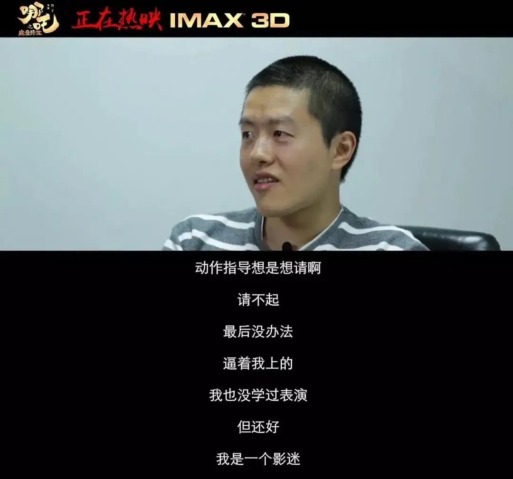
△导演饺子原名叫杨宇，是四川泸州人，从小喜欢画画、看漫画，曾在华西医科大学药学院学医，大三开始自学动画制作，毕业后后进入广告公司工作，一年后辞职，足不出户，潜心创作动画短片《打，打个大西瓜》，在父母支持下，短片获得巨大成功，之后成立动画工作室，2015年和光线传媒合作，开始创作《哪吒》
不论是对于电影产业的健康发展，还是对于一线创作者处境的改善，《哪吒》都将产生非常深远的影响。
在这里必须要向导演饺子以及慧眼识珠的光线传媒献上敬意。
关于《哪吒》，我觉得有一个话题非常值得探讨，那就是为什么这次改编会如此大受欢迎？
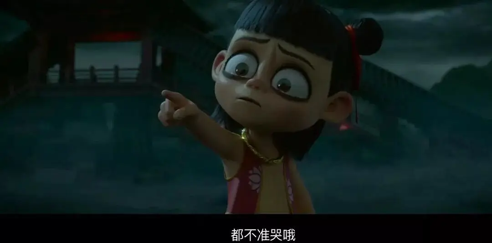
开始之前，我们有必要先一起回顾一段美术史。
下面从上到下是从中世纪到文艺复兴时期关于耶稣受难的画作。
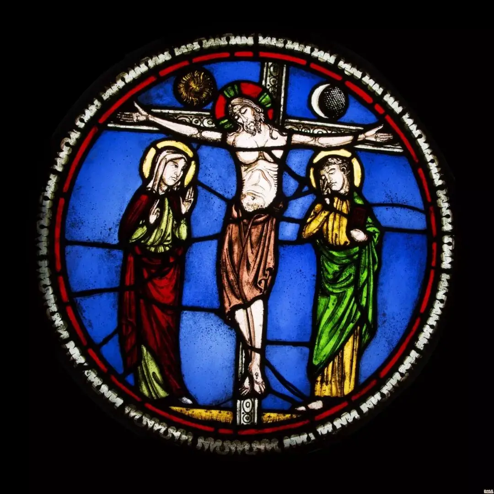
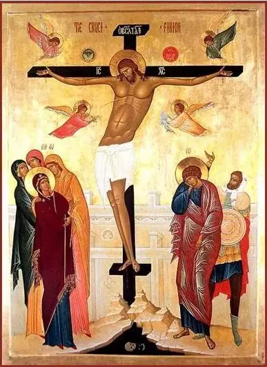
14世纪的科索沃壁画，作者不详
▼
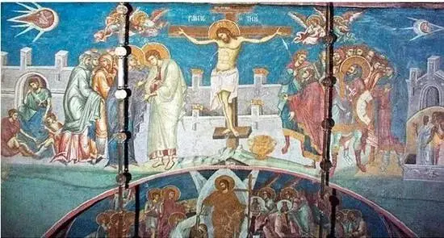
1445年，德韦登 耶稣受难图
▼
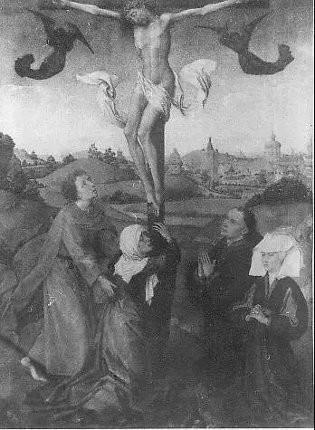
1502-1503年，拉斐尔，耶稣受难
▼
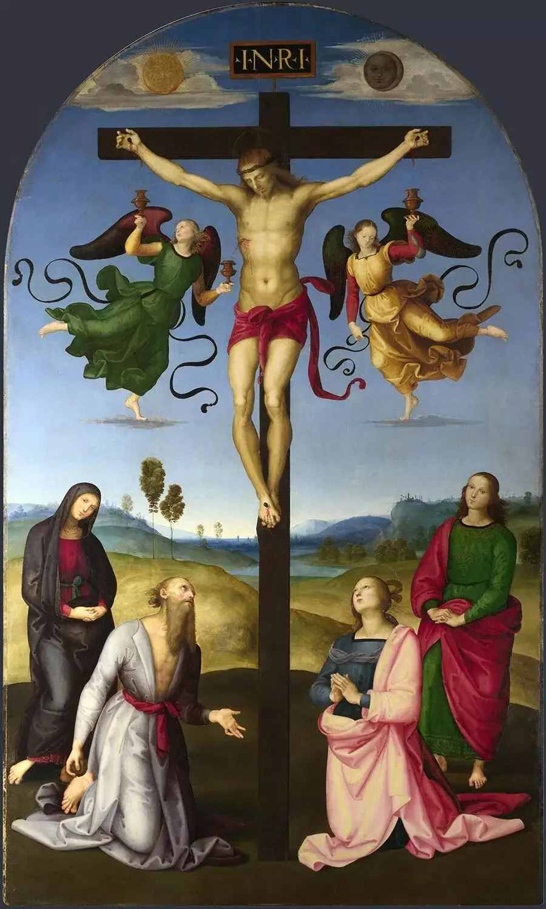
1540年，米开朗基罗，耶稣受难
▼
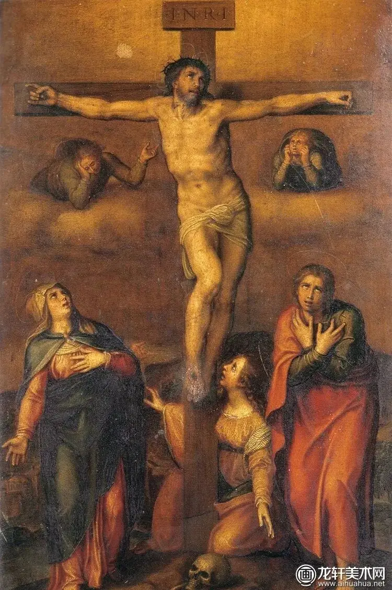
1605年，卡拉瓦乔，你们看这个人
▼
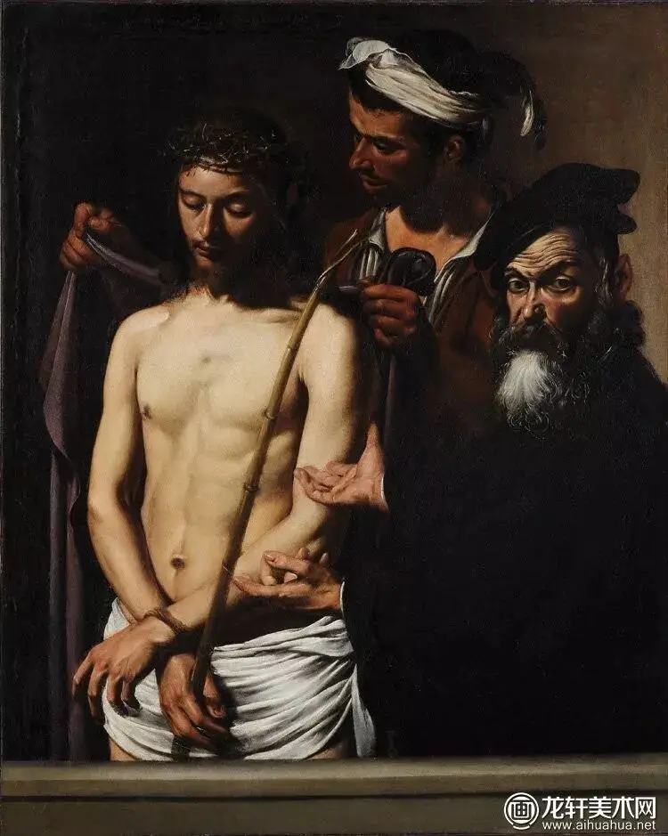
1609年，鲁本斯，耶稣下十字架
▼
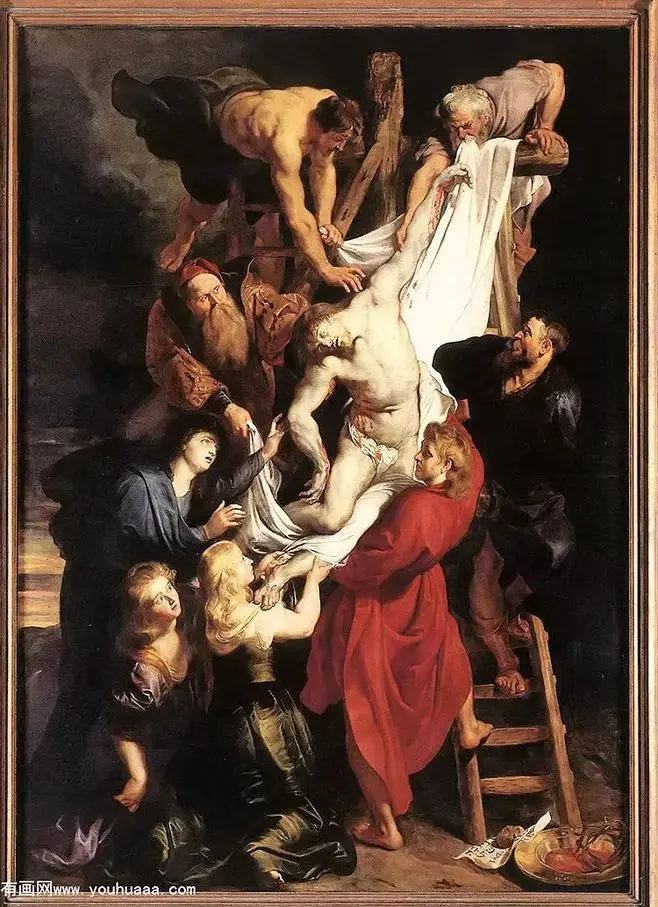
1632年，迭戈·委拉兹开斯，耶稣受难
▼
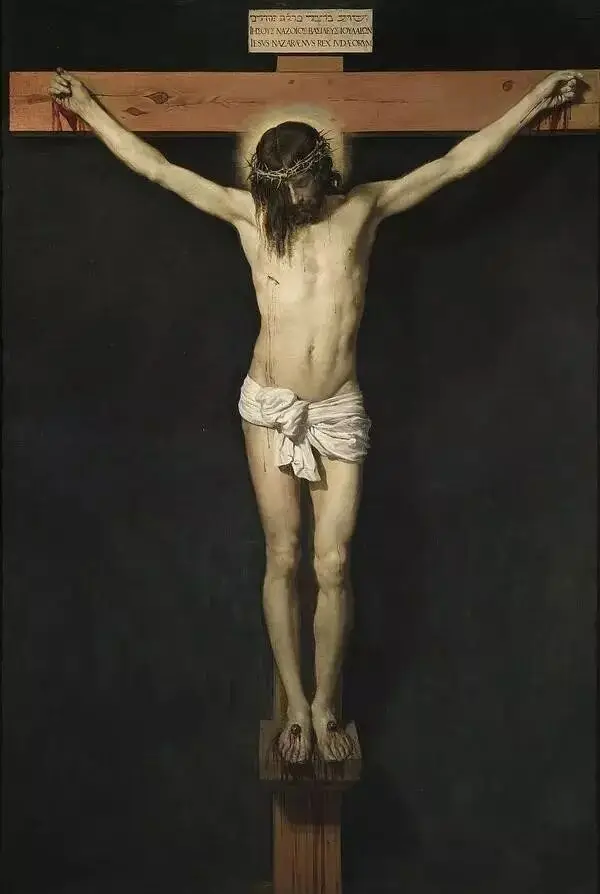
1641年，伦勃朗，从十字架上降下基督耶稣（脱离苦难）
▼
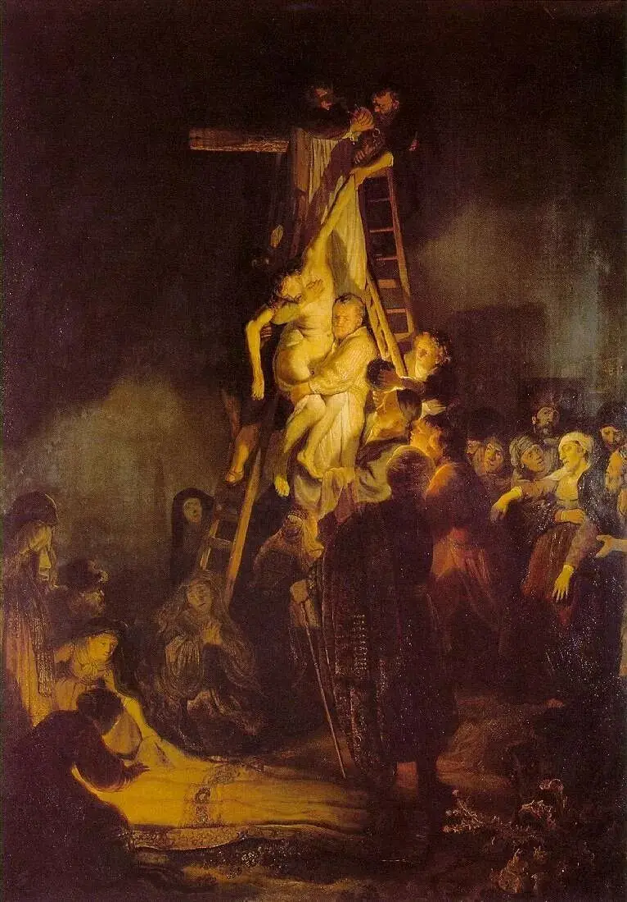
不知道大家看完后直观的感受是什么样的。
就我自己而言，越往下看越会从画作中感同身受耶稣的受难。
这种感受上的变化是如何发生的呢？
如果你有留意，会发现画作中耶稣的表情逐渐丰富，我们越来越强地从画作中感受到耶稣的喜怒哀乐。
从场景的刻画来看，长有翅膀的天使逐渐消失，耶稣受难里的神性背景逐渐转向现实主义风格，透视法、光线逐渐应用到画作中。
简单来说，天堂变成了人间，耶稣的神性逐渐被人性淹没。
这就是曾在历史中真实发生的文艺复兴运动，尽管大家对文艺复兴褒贬不一，但谁都不能否认这场运动的力量。
这场运动中，人被发现，感受被重视。
巨大的激情逐渐从禁欲和过度的理性中暴走而出。
不论一个人有没有受过专业的绘画训练，都会从被梵高那些急促有力的笔触中感受到他炙热的情感。
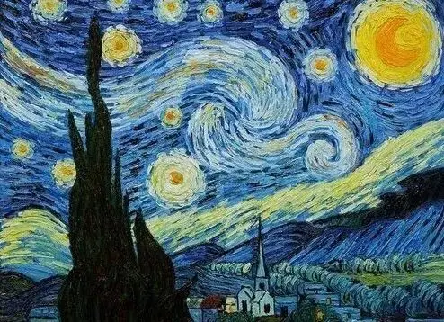
这就是《哪吒》大获成功的原因，电影的变革虽是工具、科技的变革，但更是思想观念的变革。
《哪吒》精良的制作虽然重要，更重要的是饺子完成了哪吒这个神话故事的“文艺复兴”。
过去的太乙真人一本正经、高深莫测、不食人间烟火，可这一版中的太乙真人是个骑着猪、飙着四川话的胖子。
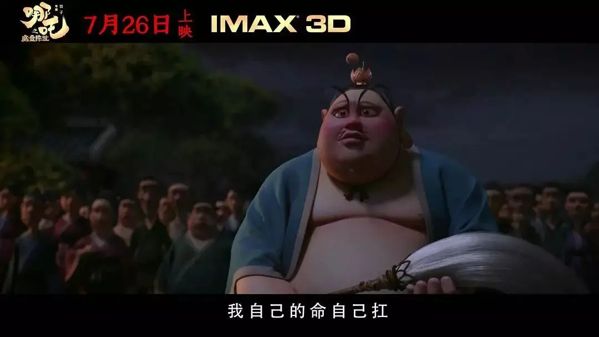
更有意思的是，这个神仙粗心大意、嗜酒如命，像人一样有不少缺点。
这对于观众的感受是非常直接的，这样的太乙真人和我们没有那么远的距离。
再看对于李靖夫妇的刻画，在原版的神话中，李夫人怀胎三年零六个月才生下哪吒。
生过孩子的母亲都可以想象这是一种怎样的煎熬，可原著中，李夫人一声不吭，甚至都没有过多心路历程的刻画。
也难怪，毕竟能生下哪吒的人一定不是常人。
可这一版的李夫人却非常接地气，怀胎这么久她会向李靖抱怨，甚至直接爆出口“怎么还不给老娘出来。”
哪吒生下来后，原版中，李靖二话不说直接朝着肉球一剑砍去，这还是亲爹么。
可这一版中，李靖夫妇明知孩子是魔丸，却舍命护娃。
相信不少父母本来是带着孩子去看哪吒的，但自己却被里面的李靖夫妇感动的一塌糊涂。
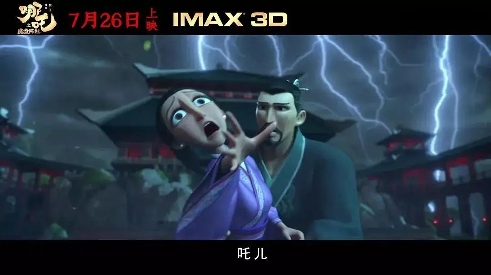
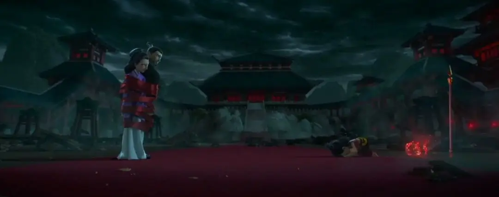
饺子对整个故事内核也进行了重构，过去是哪吒闯祸一个人去扛的悲壮，这一版是打破成见、我命由我不由天的热血。
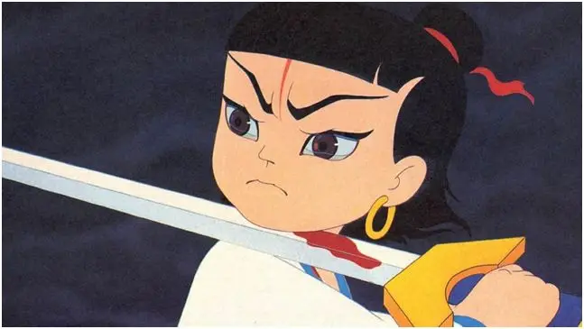
过去哪吒是天神下凡，出身金贵，这一版是魔丸转世，出身就是个异类。
过去只是一场天注定的人间修行，这一版是父母之爱、师徒之爱、友谊之爱与天命的对抗。
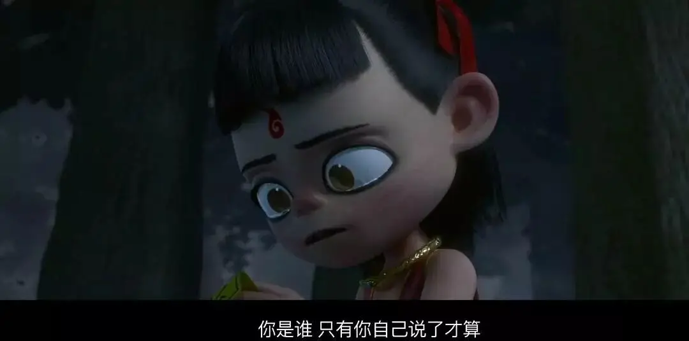
光从感染力来说，后者绝对要比之前的神话故事更让人共鸣。
贴近人间的改编、高举奋斗和爱的主旨、戏谑幽默的后现代主义元素、生动有趣的细节.....
饺子将自己跨界追逐梦想的心路历程、对于父母的感激以及作为影迷对于自己喜欢的作品的敬意全都放进了这个故事。
这种基于时代、基于自己真实经历的作品一定会让人动容。
关于电影的评价到此为止，但《哪吒》背后的人本主义依旧值得我们继续探讨。
我们继续文艺复兴的脉络，再往下看现代社会中的耶稣受难画作的演变。
1889年，高更，黄色基督
▼
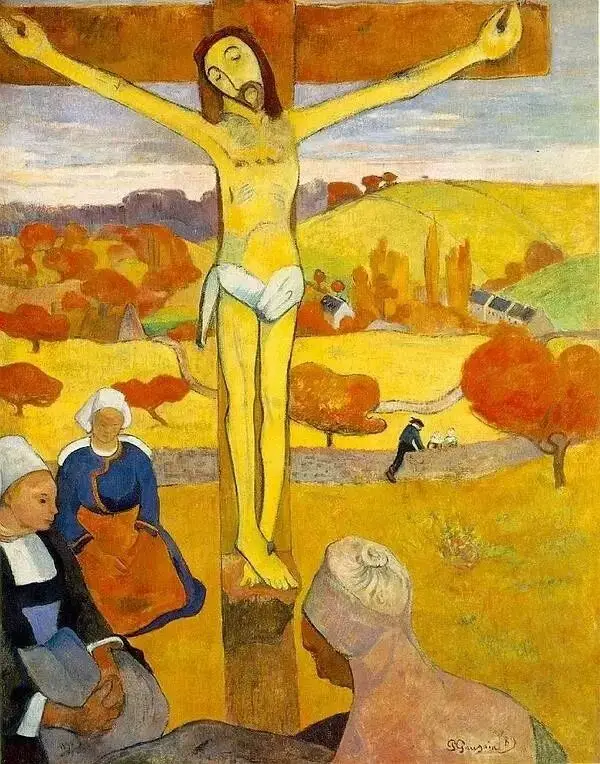
1915年，毕加索，耶稣受难图
▼
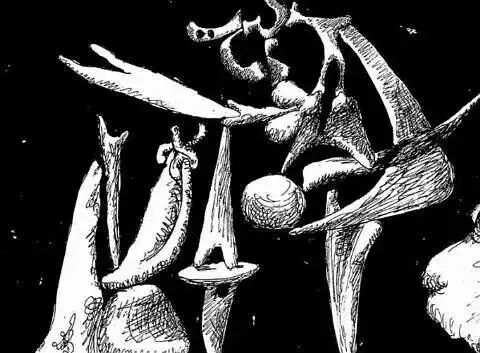
1954年，达利，受难
▼
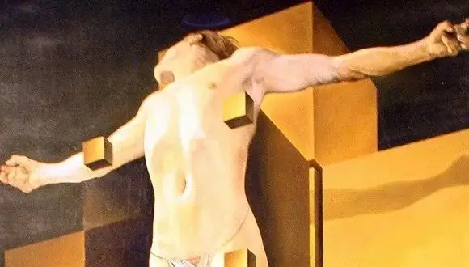
1960年，巴内特.纽曼，十字架之十四站：为什么抛弃我，第一站
▼
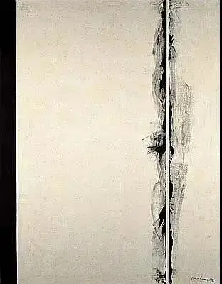
1987年，安德里斯·塞拉诺，他将受难的耶稣雕塑浸在装有摄影师尿液的烧杯里拍摄而成，他本人出生于天主教家庭，之后染上毒瘾，作品曾在美国引来极大争议，他本人则坚持没有亵渎之意
▼
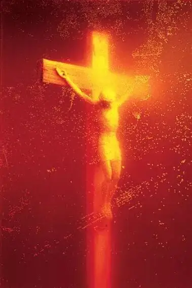
2007年，斯诺，装置艺术《十字架》,
▼
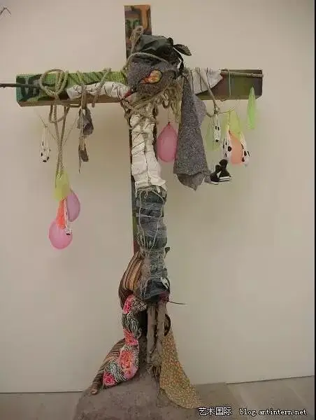
看完后，不知道大家又会有怎样的感受。
我想大家已经很难从这些作品中感受到肃穆、敬畏。
耶稣受难不仅神性没有了，就连人性也没有了，耶稣受难成为艺术家私人意念表达的工具，甚至沦为随便勾勒戏谑的素材。
人本主义重视人的感受是非常重要的，但是人类没有能力将这种以人为本的尺度控制在合理的范围之内。
过分强调自我的感受最终却让人沦为了自己欲望的奴隶。
今天的时代，大家不像过去那样对自我的欲望遮遮掩掩，转而大张旗鼓、肆无忌惮地追逐着各样食欲、性欲、财富、美貌以及权力。
我们看似自由，却难以从自我和欲望的泥潭中走出来。
过去崇高的东西今天变成了没有根基的鸡汤，我们一边快乐着，一边又面对着刻骨的空虚。
我们强调自己的感受到了一个地步，已经丧失了走进别人的动力和能力。
所有的东西都是当下的，没有真正意义上的诗和远方，只有当下的享受和快乐之后的空虚。
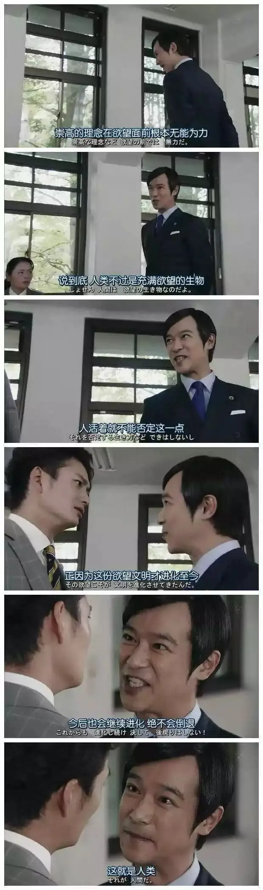
文艺复兴是一个比较正面的词，它还有另一个词语，就是世俗化。
世俗化的结果就是现今的社会越来越像当时的古希腊、古罗马，人们越来越崇尚肉欲和权力。
可这是一条放纵私欲的罪恶之路。
历史是一面镜子，过去淫乱纵欲的庞贝古城就被火山吞灭。
庞贝古城是古罗马帝国的「红灯区」和「性都」，有规模庞大的性产业
考古学者经过发掘研究，发现庞培古城不到三万人的城市
竟然有41座多座高低档次不同妓院
公元79年毁于维苏威火山大爆发
下图为出土妓院中的壁画
▼
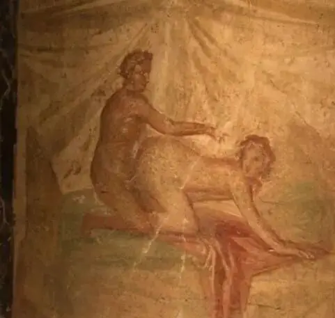
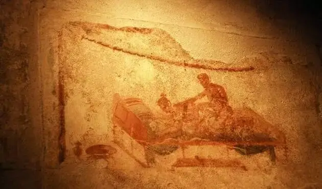
纵欲让人的心灵和身体干枯。
最终，人们从纵欲的泥潭中清醒过来，跪倒在教堂中流泪忏悔，声色犬马的罗马被基督教文明取代。
是不是很有意思，人本主义的终点竟然是神本主义。
毕竟，人虽然很强大，但更多时候是非常有限和软弱的。
有了这个历史观，我们再来看中世纪的宗教艺术，你是否能感受到那些距离感背后的敬畏和智慧。
圣彼得大教堂
▼
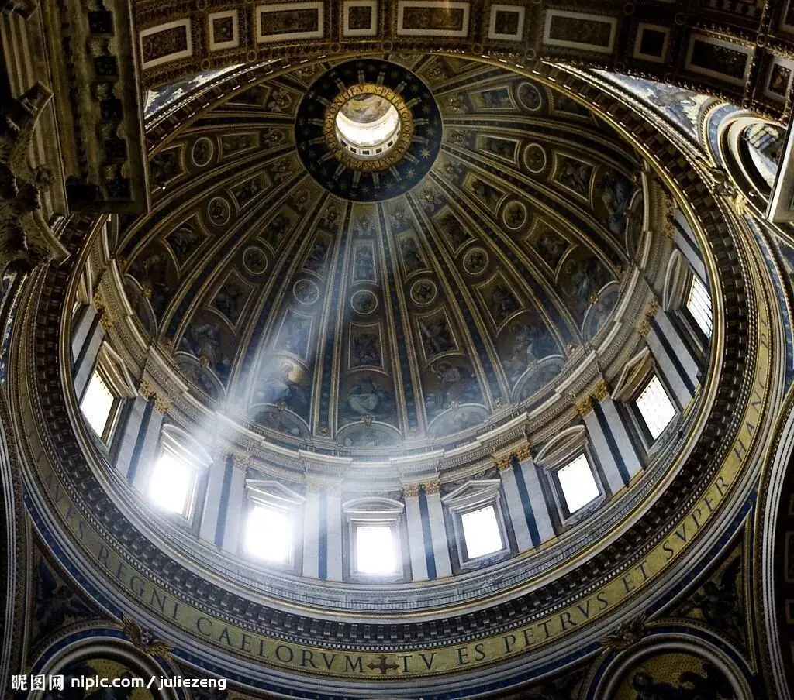
中世纪的工匠并非不懂透视法，而是因为对一切感官、肉体、情欲的美都保有怀疑，所以在艺术上故意弱化肉体的人性和情绪，以追求精神上的表达。
正是怀着这样的敬畏，中世纪教会将古希腊、古罗马那些充满肉欲的雕塑藏了起来，用一千年的时间来对付人本身的罪性。
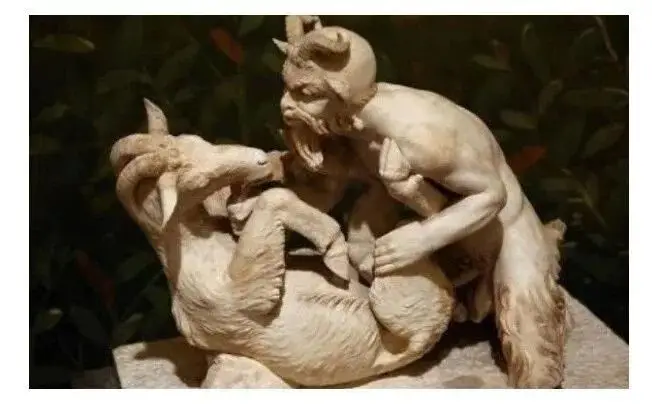
△中世纪时，那不勒斯国王查理三世（Charles III）与群臣组织一次野外郊游，他的随从在赫库兰尼姆（Herculaneum）古城的废墟中，发现一尊古罗马【潘神与羊交媾】的雕塑。这尊雕塑让国王相当的尴尬，甚至禁止其他人再挖掘废墟，潘神与羊交媾的雕塑都羞于拿出来展出，此后一直封锁在梵蒂冈的库房里
但这却走向了另一个极端，律法主义和呆板的教义忽视了人们真实的感受，信仰变得越来越虚有其表，只是为了禁欲而禁欲。
再加上天主教内部权力的腐败，终至宗教改革发生，个人主义再次抬头。
抑压已久的人们重新将储物间的古希腊、古罗马雕塑搬了出来。
就这样，人类在纵欲和禁欲中来回游走。
可不论是哪种表现形式，都是一种血气的激情，这种激情因为人类的罪性而难以持久。
这是人类一直面对的难题，我们既不能忽视人自身的感受，但又不能让自我的感受无限膨胀。
那怎么办？
我给不出答案，也许问题的答案根本就不在我们的手上，而在耶稣受难的十字架上。
扯的这么远，我只是想透过人本主义发展的脉络，让大家保持警醒。
《哪吒》的成功，给资本和其他创作者提供了一个范例，葫芦娃、封神榜、甚至西游记，这些大IP将来都可以按照这样的模式批量生产。
可这种人本主义依旧是充满陷阱和挑战的。
“我是谁，并不是别人说了算，而是自己说了算”，《哪吒》里的激情还在父爱、母爱的保护之中。
当人本主义让自我的欲望无限膨胀时，我们的激情总有一天会跨出正常伦理的范围，让我们化身为魔，走上庞贝古城的老路。
我丝毫不怀疑我们能否打造出自己的漫威宇宙，我只是希望我们未来的作品不仅反映时代的思潮，更是要回应当今时代的弊病，不仅停留在鸡汤和励志，更有深邃的表达和思考。
-END-
相关推荐
▼
（点击图片即可获取全文）
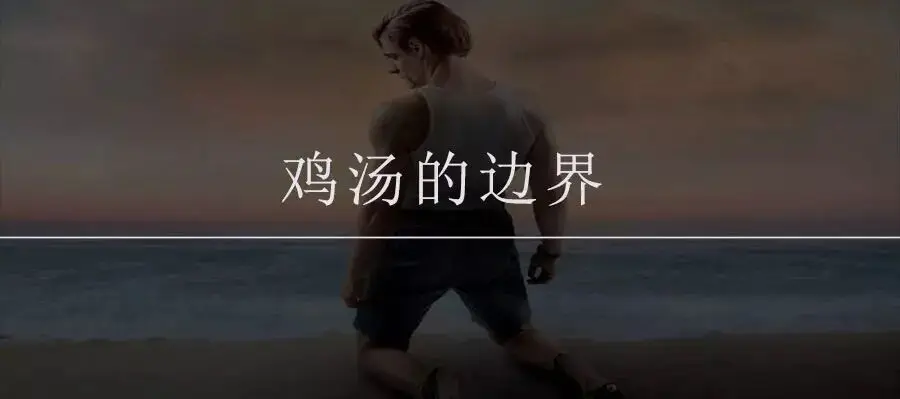
这里没有挑逗你眼目情欲的小鲜肉
也没有挑动你肉体情欲的段子
更没有膨胀你今生骄傲的鸡血
我们只在乎那些最质朴真诚的作品
在那里我们才能恢复真正的想象力
我们也坚信这才是我们真正需要的

ID:Six_hundred_hits
长按二维码，一键关注
【六百击】
电影评论
尽情分享朋友圈

微信二维码打赏通道
特别提醒：文中图片来自网络，版权归原作者所有如有侵权请立即与我们联系,我们将及时删除。